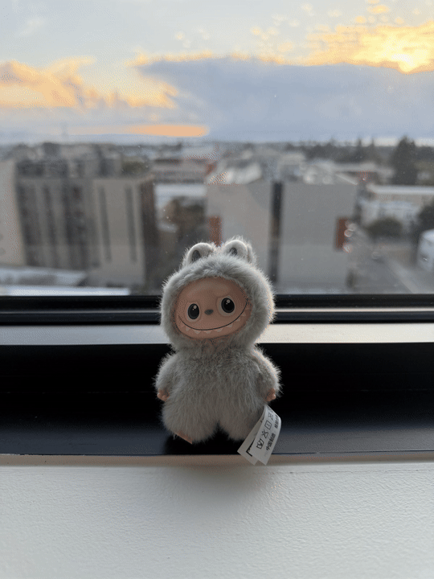
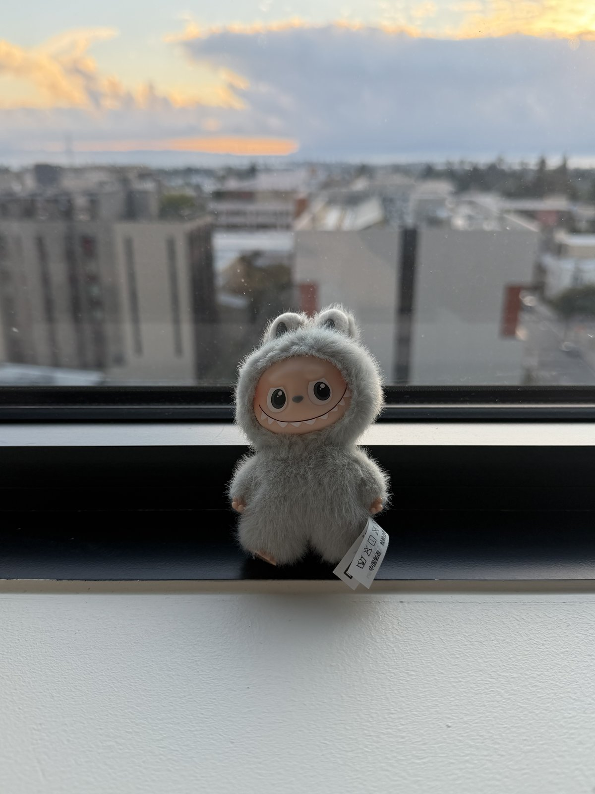
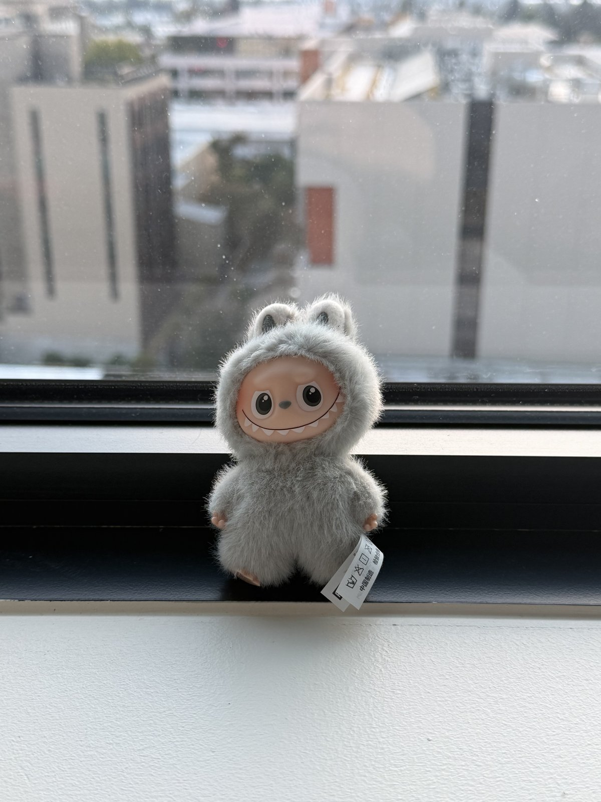
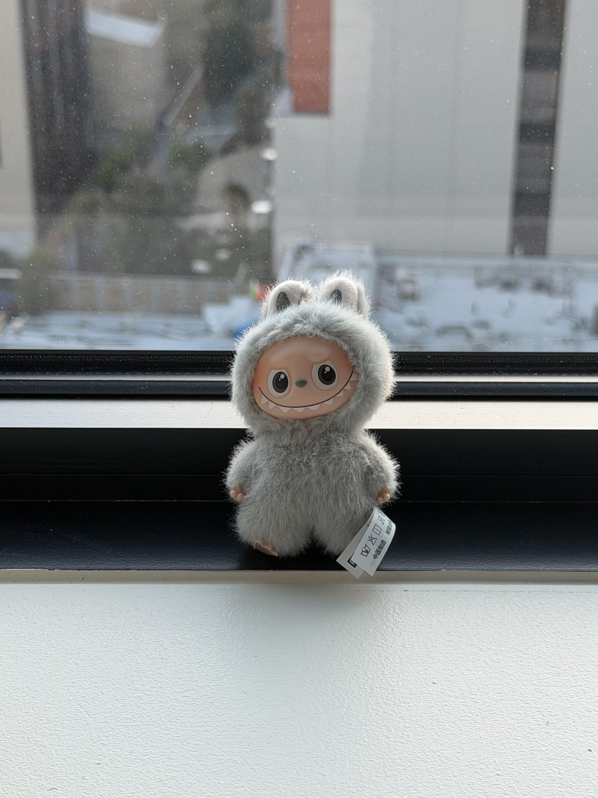
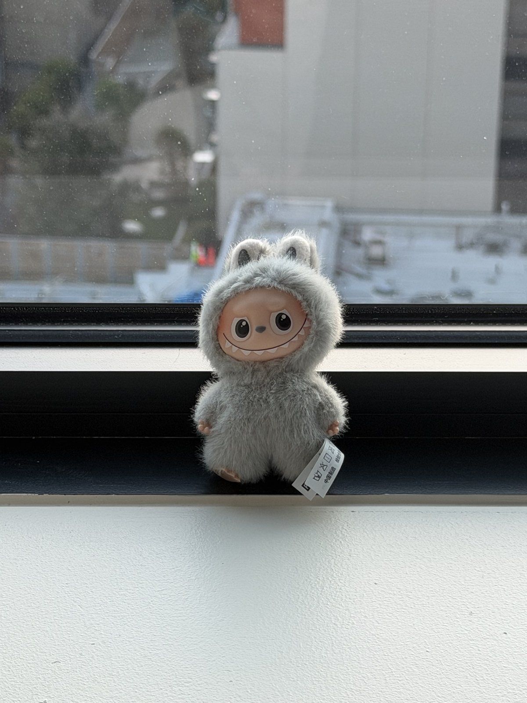
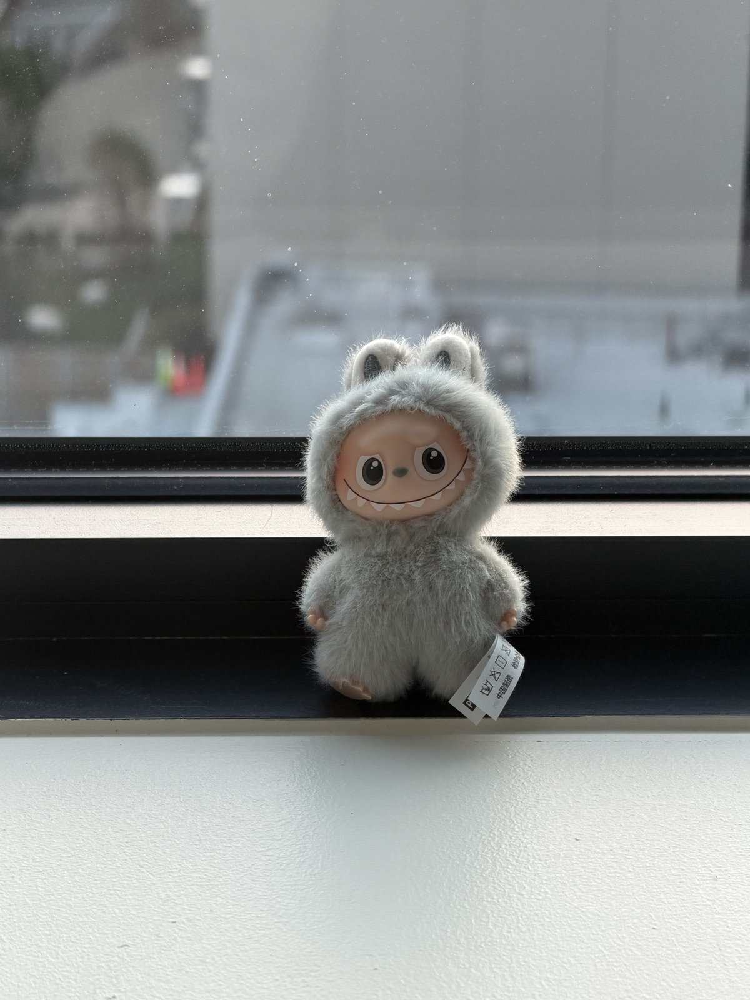
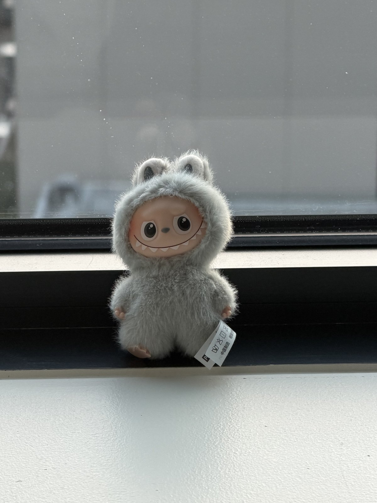

01
Selfie: the wrong way vs. the right way
A close-up selfie with no zoom, then the same face from several feet back with the camera zoomed in.
Close up, no zoom
About a foot away. The nose and cheeks look enlarged.
Far away, zoomed in
Several feet away. Proportions look natural.
02
Architectural perspective compression
The Valley Life Sciences Building, zoomed in from far away, then wide from up close.
Far away, zoomed in
The facade looks flattened and compressed.
Up close, no zoom
Strong perspective. Near columns loom over far ones.
03
The dolly zoom
Move the camera back while zooming in so the subject stays the same size. Eight stills, combined into a GIF.

The eight stillsClosest → farthest





